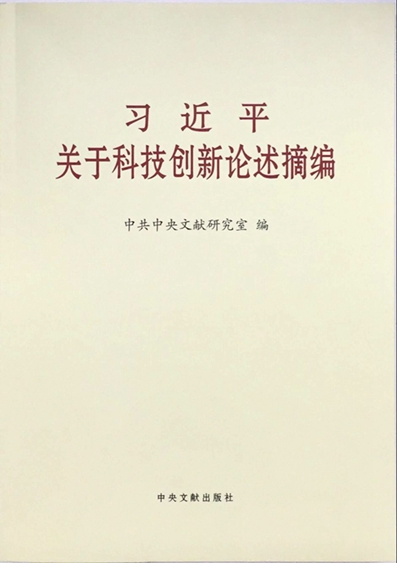
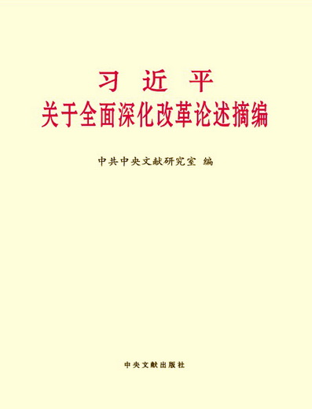

-
-
-
《习近平关于社会主义社会建设论述摘编》
本书内容，摘自习近平同志二〇一二年十一月十五日至二〇一七年九月十九日期间的讲话、报告、演讲、指示、批示、贺信等一百四十篇重要文献，分九个专题，共计三百二十六段论述。其中许多论述是第一次公开发表。
-
《习近平关于社会主义政治建设论述摘编》
本书内容，摘自习近平同志二〇一二年十一月十五日至二〇一七年五月三日期间的讲话、报告、谈话、指示等七十多篇重要文献，分九个专题，共计三百三十段论述。其中许多论述是第一次公开发表。
-
《习近平关于社会主义经济建设论述摘编》
本书内容，摘自习近平同志二〇一二年十一月十五日至二〇一七年三月十二日期间的讲话、报告、指示等一百二十多篇重要文献，分十个专题，共计四百九十四段论述。其中许多论述是第一次公开发表。
-
《习近平关于全面从严治党论述摘编》
本书内容摘自习近平同志二〇一二年十一月十五日至二〇一六年十月二十七日期间的讲话、文章等八十多篇重要文献，分十个专题，共计三百七十一段重要论述。其中许多论述是第一次公开发表。
-
《习近平关于全面建成小康社会论述摘编》
本书摘自习近平同志二〇一二年十一月十五日至二〇一六年三月十日期间的讲话、谈话、演讲、贺信、指示等一百三十多篇重要文献，分七个专题，共计三百三十二段论述。其中部分论述是第一次公开发表
-
《习近平关于严明党的纪律和规矩论述摘编》
本书收入200段论述，摘自习近平同志2012年11月16日至2015年10月29日期间的讲话、文章等40多篇重要文献。许多论述是第一次公开发表。
-
《习近平总书记系列重要讲话读本（2016年版）》
相比于两年前的讲话读本，今年的新读本最大的改变，首先在于围绕“四个全面”和“五大发展理念”，有4章内容的新增，包括：协调推进“四个全面”战略布局、全面建成小康社会、全面依法治国和“五大发展理念”相关内容。
-

《习近平关于科技创新论述摘编》
本书内容，摘自习近平同志二〇一二年十二月七日至二〇一五年十二月十八日期间的讲话、文章、贺信、批示等五十多篇重要文献，分八个专题，共计一百八十八段论述。其中许多论述是第一次公开发表。
-
《习近平关于协调推进“四个全面”战略布局论述摘编》
全书共分6个专题，收入287段论述，摘自习近平同志2012年11月15日至2015年9月3日期间的讲话、报告、批示、指示等110多篇重要文献。
-
《习近平关于全面依法治国论述摘编》
本书共分8个专题，收入193段论述，摘自习近平同志2012年12月4日至2015年2月2日期间的讲话、报告、批示、指示等30多篇重要文献。其中部分论述是第一次公开发表。
-

《习近平用典》
本书旨在对习近平总书记重要讲话（文章）引用典故的现实意义进行解读，对典故的背景义理进行解释，以帮助广大党员干部深入学习习近平总书记的重要讲话（文章）精神。
-
《平易近人——习近平的语言力量》
本书从习近平总书记系列重要讲话的语言风格入手，辑录了中共十八大以来至2014年5月，习近平总书记在各种场合发表的重要讲话中富有特色的引文引言，共70个词条，对其语源、语义、理论价值以及社会反响等，进行简明扼要的阐释，以期为广大干部群众学习习近平总书记系列重要讲话精神，提供一个新颖的、可读性强的、“接地气”的读本。
-
《习近平关于党风廉政建设和反腐败斗争论述摘编》
《论述摘编》共分9个专题，收入216段论述，摘自习近平同志2012年11月15日至2014年10月23日期间的讲话、文章、批示等40多篇重要文献。其中许多论述是第一次公开发表。
-
《摆脱贫困》
本书初版于1992年7月，收录了习近平同志担任中共宁德地委书记期间自1988年9月至1990年5月的重要讲话、文章，共29篇，121千字。本书是习近平总书记的第一部个人专著，真实记录了他在宁德地区工作期间贯彻落实党的路线方针政策，全面建设小康社会、推进中国特色社会主义事业的实践探索。
-
《习近平关于实现中华民族伟大复兴的中国梦论述摘编》
这本书的内容，摘自习近平同志2012年11月15日至2013年11月2日期间的讲话、演讲、谈话、书信、批示等50多篇重要文献，共计146段论述。
-

《习近平关于全面深化改革论述摘编》
《习近平关于全面深化改革论述摘编》共分12个专题，收入274段论述，摘自习近平同志2012年11月15日至2014年4月1日期间的讲话、演讲、批示、指示等70多篇重要文献。其中部分论述是第一次公开发表。
-
《干在实处 走在前列——推进浙江新发展的思考与实践》
该书辑录了习近平同志2002年至2006年担任中共浙江省委书记期间的重要报告、讲话、文章和批示。集中彰显了习近平同志的执政风格、领导艺术、工作作风和家国情怀。人民网·中国共产党新闻网独家刊发部分精彩章节。
-

《习近平关于党的群众路线教育实践活动论述摘编》
本书内容，摘自习近平同志二〇一二年十一月十五日至二〇一四年三月十八日期间的讲话、批示、指示等二十多篇重要文献，共计一百七十四段论述。其中部分论述是第一次公开发表。
-
《习近平总书记系列重要讲话读本》
该《读本》分十二个专题，全面准确阐述了习近平总书记系列重要讲话的重大意义、科学内涵、精神实质和实践要求，阐述了讲话提出的一系列重大战略思想和重大理论观点。该书框架结构是在深入领会和梳理习近平总书记系列重要讲话基础上设计的，全书主要观点和论述忠实于原著。《读本》为广大党员、干部、群众学习讲话精神提供了重要辅助材料。
-
《之江新语》
2003年2月至2007年3月，时任浙江省委书记、省人大常委会主任的习近平同志，曾在浙江日报“之江新语”专栏发表短论二百三十二篇。2007年5月6日，浙江日报社经再三征求习近平同志的意见，并在征得习近平同志同意后，以《之江新语》的书名，将这些短论结集出版。
-
《学习习近平同志关于机关党建重要论述》
该书对习近平同志到中央工作以来关于机关党的建设的重要论述和重要批示，以及担任浙江省委书记期间的讲话、谈话、文章等，进行了认真梳理和比较系统的学习研究。该书包括前言和12个部分，对习近平同志关于机关党的建设的地位作用、总体要求、职责定位、重大任务、制度依据、重点工作和队伍建设等方面的重要论述作了深入解读。